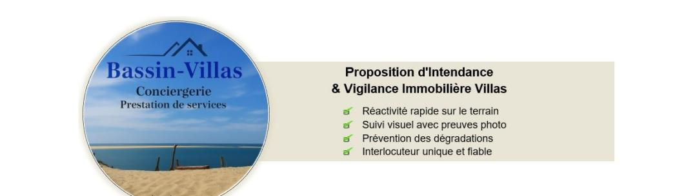

Forfait base Mensuel « Sérénité & Vigilance »
Tarif mensuel indicatif basé sur la superficie du bien : HT 450 € à 650 €
Ce forfait fixe garantit la sécurité et le maintien en état du patrimoine tout au long de l'année.
- Vigilance hebdomadaire : Passage 1 fois par semaine (contrôle des accès, vérification des fuites, aération, relevé du courrier).
- Vigilance post-intempéries : Passage systématique après chaque tempête ou fort coup de vent sur le Bassin (vérification toiture, ouverture jardin).
- Gestion des intervenants : Accueil et contrôle des prestataires extérieurs suite intervention (jardinier, pisciniste, artisans ou autres).
- Reporting : Compte-rendu par SMS ou mail (rapport + photos digitalisés) si événement particulier.
Service de la conciergerie (Le « Luxe »)
- Forfait par intervention pour la mise en service complète du bien avant arrivée : HT 85 € à 140 €
Ouverture des volets, mise en route chauffage/climatisation, mise en place mobilier extérieur, liste de courses de bienvenue sur mesure (montant des achats facturé au réel sur présentation de justificatifs).
Fermeture : Sécurisation intégrale du bien après départ — contrôle des installations, coupure des arrivées si requis, fermeture complète, activation de l'alarme et mise en protection des volets. - Forfait d'intervention d'urgence par déplacement (Jour) : HT 100 € + 40 € HT / heure
- En fonction période annuelle, intervention rapide suite à déclenchement d'alarme, suspicion d'intrusion ou incident technique, intempéries etc.
Prestations Techniques (à la demande)
Ces prestations sont facturées en sus du forfait de base.
- Entretien et Nettoyage facturé à l'heure : HT 35 € à 40 €
Ménage approfondi avant/après séjour, entretien des matériaux nobles (marbre, parquets, terrasses).
Toute demande spécifique pourra faire l'objet d'une proposition tarifaire forfaitaire personnalisée.